模块三：物业管理
统一承载报修工单、日常巡检和设备档案三条业务线，实现工单有闭环、巡检有留痕、设备有档案。
耗材管理
公产房管理
预定管理
4.1 业务现状：过程分散、记录缺失
物业运维长期依赖微信群和电话派单，过程没有留痕，事后难以追溯。
工单难追踪
报修通过微信群或电话发起，派单过程无记录，维修进度不透明，处理结果无法统一沉淀，超时无法预警。
巡检难落地
日常巡检依赖纸质台账，标准不统一，无法规范漏检，现场隐患照片和发现问题难以电子化归档留存。
设备底数不清
设备信息分散维护，维保到期时间靠人工提醒，维保单位联系方式和维保资料无统一归档，查找效率低。
4.2 建设方案：三线并进 + 统一闭环
报修工单闭环
统一承载工单全流程，支持紧急标记、故障分类和耗材记录。办结必须填写维修人员、完工说明和完工照片，每个节点均留存处理履历，超时自动预警。
巡检标准化闭环
通过模板、计划、排班、任务四层结构自动生成巡检任务，巡检员逐项记录正常/异常，异常项必须备注并上传照片，结果提交后形成可追溯的完整记录。
设备档案统一管理
统一维护设备基础信息、维保单位、联系人、维保到期日期和设备附件，系统自动提醒维保临期，同时为工单处理提供设备关联查询支撑。
4.3 预期成效：从人工催办到系统流转
通过工单闭环、巡检留痕和设备预警，减少人工协调和被动响应。
| 指标 | 原有方式 | 系统建设后 | 预期变化 |
|---|---|---|---|
| 报修响应 | 微信/电话人工转达，进度不透明 | 系统派单，状态实时更新，超时自动预警 | 响应透明，超时可管控 |
| 巡检执行 | 纸质台账，漏检无感知，记录不完整 | 系统任务自动分配，逐项记录留档 | 执行有据，漏检可追溯 |
| 设备维保 | 维保到期靠人工提醒，容易遗漏 | 临期自动推送提醒，档案集中管理 | 主动预警，减少遗漏风险 |
| 报修工作量 | 全年报修约 3000 余次，电话微信跟踪催促压力大 | 工单统一入口，按楼宇、故障类型和处理状态统计 | 支撑高频问题分析，减少堆积和反复催促 |
| 历史追溯 | 工单、巡检结果散落，查找困难 | 全流程数据沉淀，支持统计分析 | 有据可查，数据可用 |
4.4 场景演示：报修工单全流程闭环
以一条日常维修报修为例，展示从移动端发起报修，到工程部接单、处理、办结的完整工单闭环。
1. 报修提交：报修人员通过 PC 端或移动端提交报修工单，选择报修区域，填写故障描述、故障分类、修缮分类，并可上传现场照片等附件。
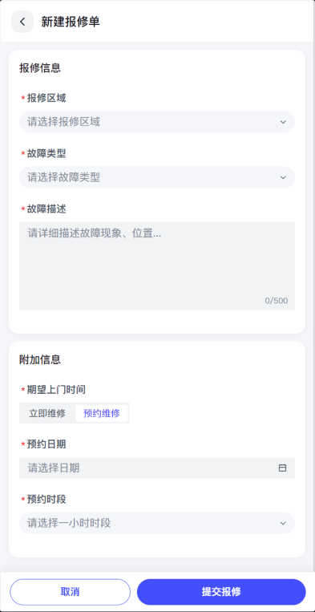
2. 工单接单：报修工单提交后进入待接单状态，工程部主管可在待处理工单中查看报修信息，并根据故障情况进行接单处理。
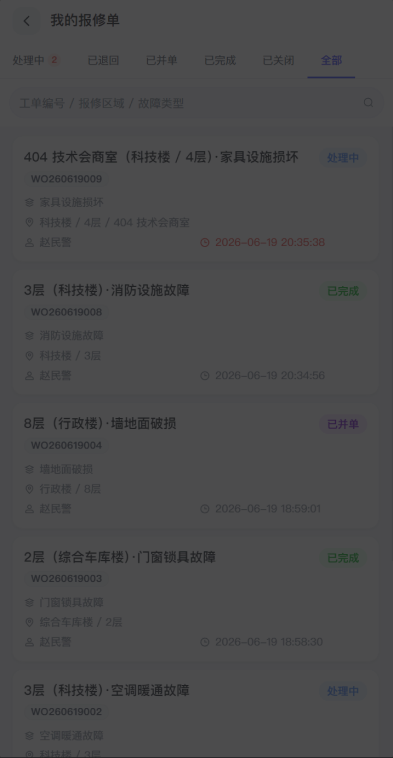
3. 工单处理：工程部主要处理“零星修缮”类维修工单，对于“小额修缮”或“专项修缮”类事项，可转交机关室处理。处理过程中支持接单、挂单、激活、退回、关闭和并单等操作，确保不同类型维修事项按流程流转。
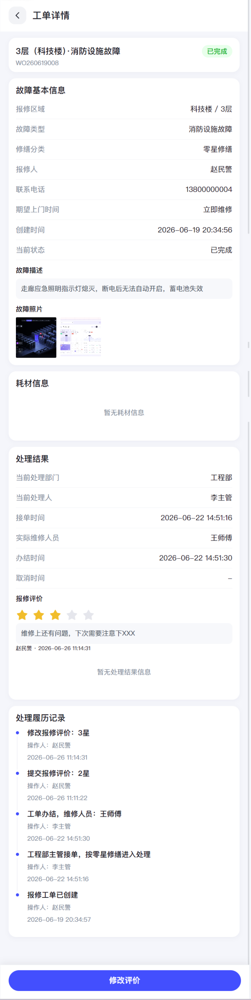
4. 工单办结：维修完成后，处理人填写实际维修人员、完工说明和耗材使用情况，确认办结后工单进入已完成状态。
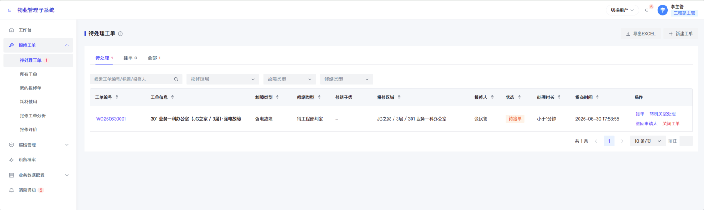
5. 发起人评价：工单完成后，报修人员可对维修结果进行五星评分和评价备注，管理端可查看评价结果，作为服务质量分析依据。
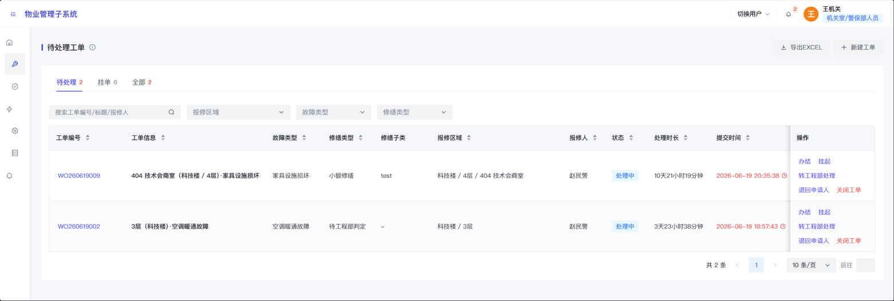
6. 工单统计分析：系统对报修数量、完成数量、超时工单、平均完成耗时、维修人员工作量、修缮类型和耗材消耗等数据进行统计分析，支撑高频问题分析、工作量统计和工程管理决策。
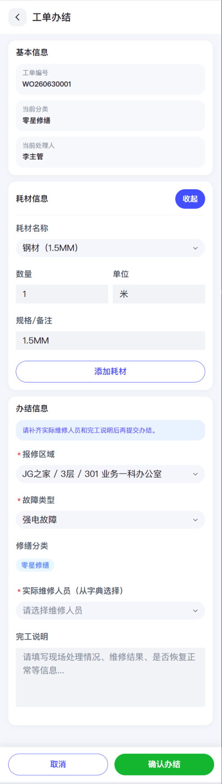
4.5 日常巡检管理闭环
以一条日常维修报修为例，展示从移动端发起报修，到工程部接单、处理、办结的完整工单闭环。
1. 巡检模板维护：工程部主管可配置巡检模板，维护检查项分组、检查内容、检查标准、是否拍照、周期建议和备注，形成统一巡检标准。
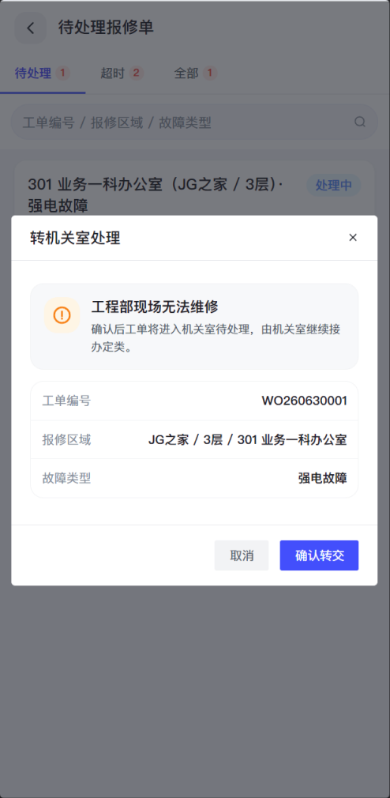
2. 巡检计划配置：巡检计划绑定巡检模板，配置巡检类型、周期规则、巡检区域、提醒时间和巡检项，作为系统生成巡检任务的依据。
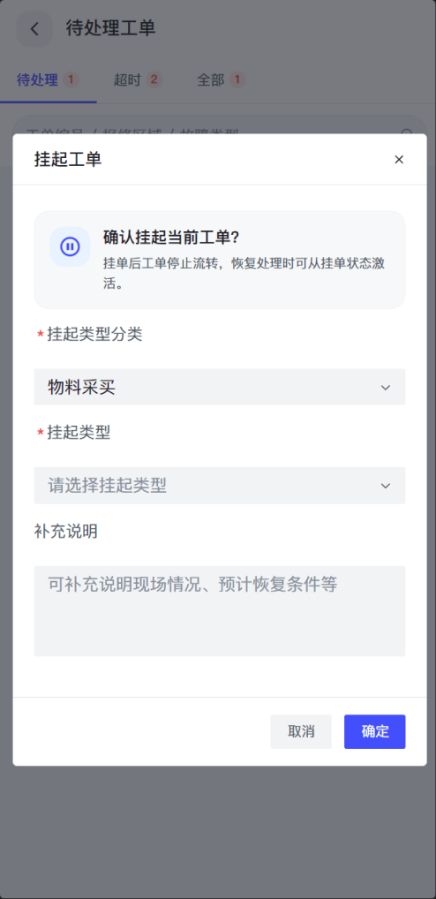
3. 自动生成巡检任务：系统根据启用的巡检计划自动生成巡检任务，可生成指定巡检员任务或共享任务，巡检员按任务要求开展现场检查。
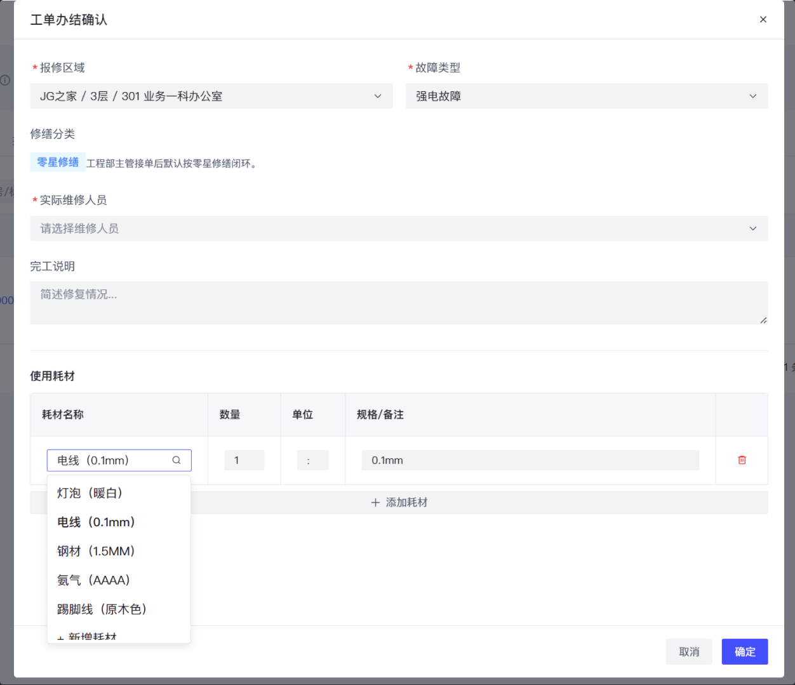
4. 移动端执行巡检：巡检员可在移动端查看巡检任务，进入任务详情后逐项录入检查结果，上传现场照片并填写异常备注，实现现场作业留痕。
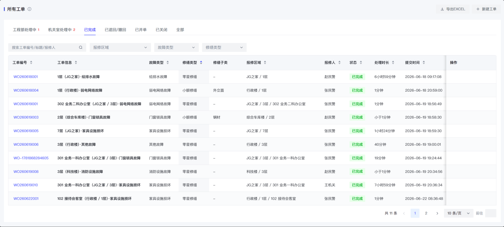
5. 巡检统计分析：系统对巡检任务总数、已完成任务、巡检计划数量、任务状态、周期分布、巡检员任务量和完成趋势进行统计分析。
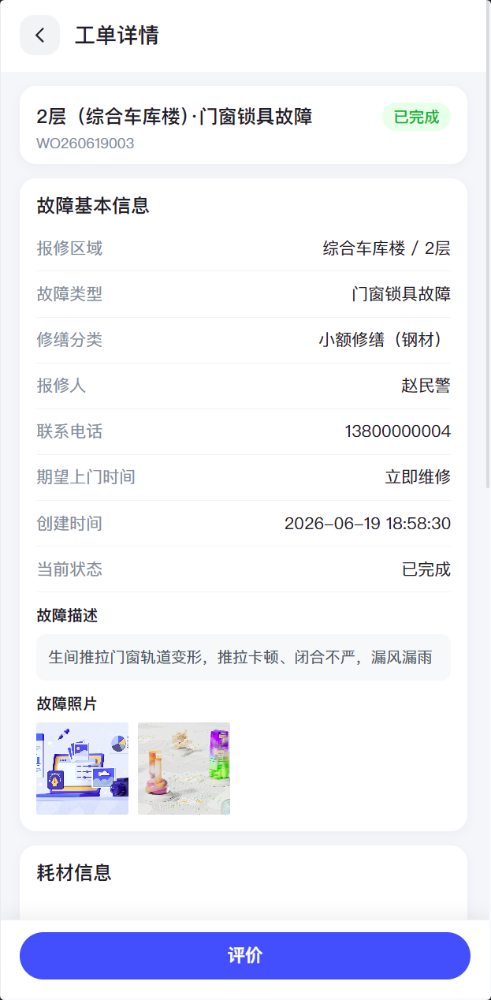
4.6 建设价值
推动物业管理从"微信派单、纸质巡检"转向"系统流转、标准执行、数据沉淀"。